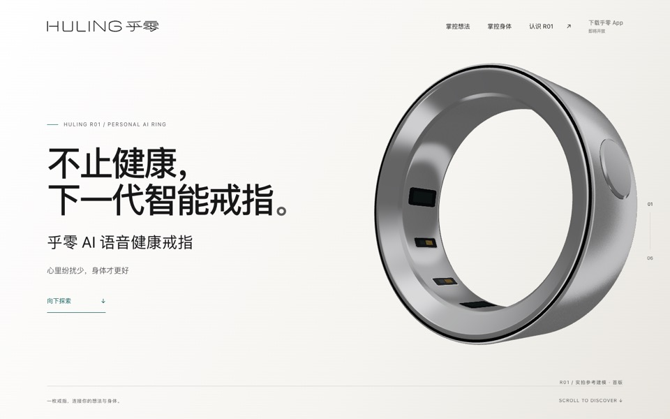
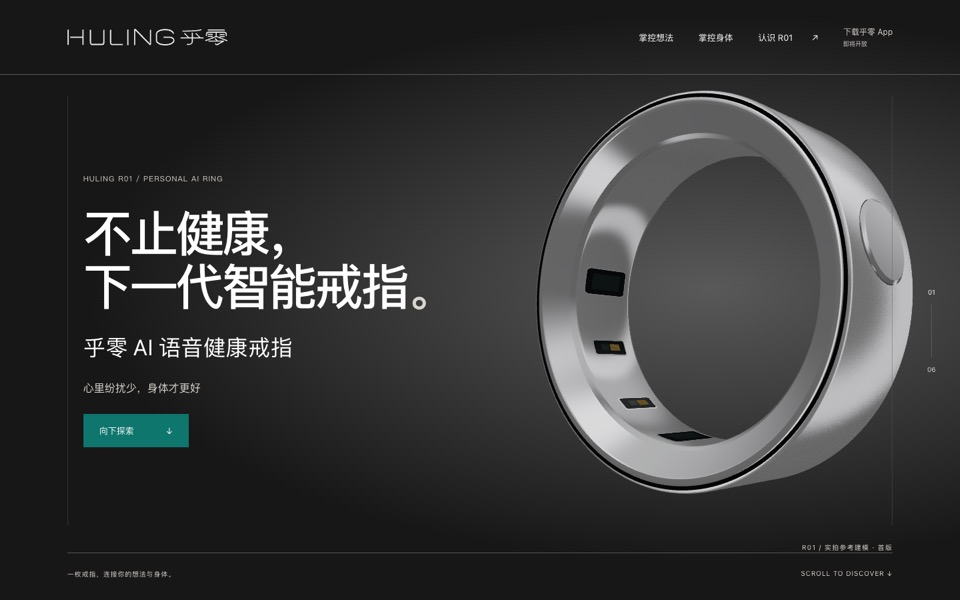
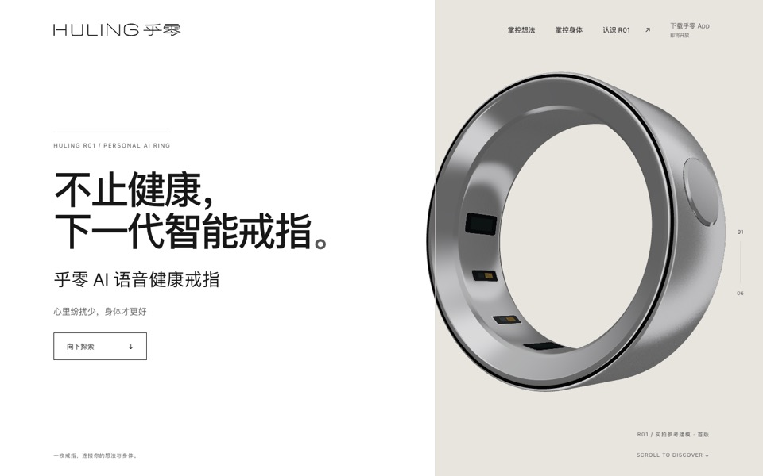

查看原版 ↗
查看原版 ↗同一枚 R01，三种表达。
三版视觉提案 · 点击进入完整滚动页面
文案、信息优先级、三色模型与戒指滚动逻辑保持一致。

方案 A
暖白 · 轻盈日常
微暖白与柔和灰阶，留白更轻，青绿只落在细节。

方案 B
墨黑 · 精密科技
深色展台、细线边界，以一处青绿引导探索。

方案 C
留白 · 空间对照
纯白与暖灰形成空间，色块跟随戒指转场，黑色收尾。
三个独立预览入口，原版页面与模型检视页均保留。建议先在电脑上看完整滚动，再用手机比较上下排版。